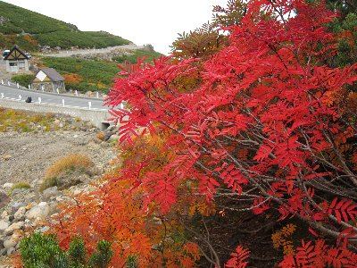
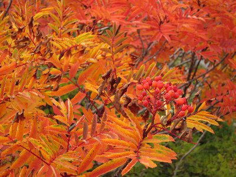
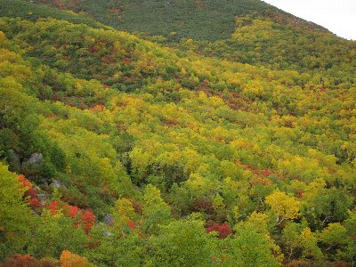
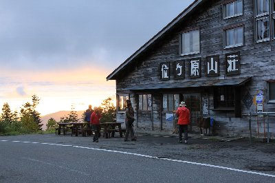
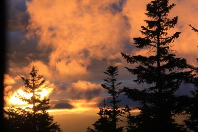
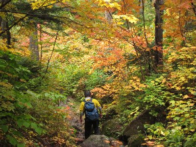
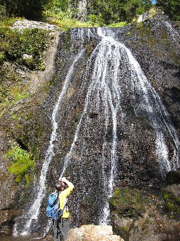

紅葉の乗鞍岳 | 2012年9月 幹事：Ryuu |
|---|---|
| 先週まで沖縄で夏を満喫してたら、知らぬ間に世間は秋の気配です。そんな秋を先取りするべく、乗鞍岳に行ってきました。メンバーはRyuuさんと私の二人。声を掛けたのに二人だけ。 乗鞍岳は日本で一番高い場所まで車で行ける道路がある。って事らしく標高2700mまで車で登れちゃうんですが、今はマイカー規制がありまして、自家用車では行けません。シャトルバスがあるので、それに乗って頂上近くの畳平まで行きます。片道1400円です。 | |
 乗鞍岳に登ると北アルプスがよく見えます |  乗鞍岳山頂 激混みでした |
| 畳平で一杯コーヒーを飲んで、山頂まで1時間半の登りに出発です。短い！ 多少の雲があるものの、おおむね晴れ。登るにつれて、北アルプスの山々が見えてきます。結構遠くの山も見えますよ。 とても台風が近づいているとは思えません。 そうです、この時、沖縄方面から台風が近づきつつあったのです。明日の夜には中部地方上陸と言っていますから、明日は天気が崩れるかもしれません。 手軽に登れる山とあって、多くの登山客（観光客）が訪れていて、登山道は大混雑です。登山道も整備はされていますが、舗装されているわけではないですから、狭い箇所では渋滞気味です。 | |
 ちょっと下った所からの乗鞍岳 |  |
| 景色を眺めながら、あの山は何だと言いながら、のんびりと乗鞍岳山頂（ここも剣ヶ峰）3,026mに到着です。登山道も混んでいるのだから、山頂は当然、大混雑です。 なんとか記念写真を撮って昼食にします。南西方面に、7月に登った御岳山が見えます。 今回の目的は紅葉です。頂上制覇が目的ではありません。昼食後、紅葉を見るために下山開始！ 来た道を戻るのではなく（多少戻るのだが）、バスが登ってきた道をショートカットする様に登山道を下っていきます。頂上から下って直ぐに、真っ赤なナナカマドがありました。すでに辺りは黄色やオレンジ、赤に染まっています。秋ですね。 徐々に下りながら紅葉を楽しみます。道路と交差するところでカメラを抱えた中高年の集団とすれ違ったりします。彼らはバスで移動しているらしいのですが、歩いたら違う綺麗な場所見られるのにな〜なんて、思ったりしてました。でも、三脚重いから無理か。 | |
|  所々が真っ赤っか |  もしくはオレンジ |
| 山全部が真っ赤、とかは無いですが、緑・黄色・オレンジ・赤と色々な色で染まった景色は、心洗われる思いです。この景色を眺めながらコーヒー飲みたいですね。持ってきてないけど。 そして今日は、位ヶ原山荘に宿泊です。宿に着いたら即ビールで乾杯。山荘と言っても個室部屋でゆったりです。ただし風呂はありません。 夕食に猪鍋（だと思う。鹿だったか？）も出まして、美味しく頂きました。その日は爆睡。何時間寝たのか、寝過ぎじゃないのかと心配するほどよく寝ました。 翌朝、東の空がオレンジ色に染まっているのに気付き、急いで起床。外に出て朝日を見ます。雲が掛っていて、お日様自体は見えないけど、オレンジ色に染まった雲が素晴らしいです。 | |
|  緑に赤、黄、オレンジと色とりどり |  位ヶ原山荘前での朝 |
| 朝食後、三本滝を目指して下山。位ヶ原山荘から下は、まだ紅葉が始まっていないようなので、この辺はスルーしてガンガン下ります。 1時間も下ると三本滝に到着です。この辺りの川は硫黄が混じっているのか、青白い川床で色がきれいです。 | |
|  朝焼け |  登山道はこんな感じ |
| 三本滝は、その名のとおり三つの滝が一ヵ所で合流しているのですが、三つとも様相が違っていて、細くチョロチョロと、ちょっと短いけど水量が多いのと、山肌を這うように広く滑って来る滝と、特徴が有って面白いです。 マイナスイオンを全身に浴びて帰路に着きました。 今回は、ほぼ下りで楽なハイキングでしたが、色々な景色が楽しめるコースでした。新緑の時期とかも気持ちがいいでしょね。 | |
|  三本滝の左端 |  三本滝の中央 |
| 写真：べっしー＆Ryuu コメント：べっしー | |